Manual de usuario
Guía para registrar, turnar y dar seguimiento a la documentación oficial desde las bandejas de entrada y salida, las consultas y los módulos de Presidencia y Administración.
SIArchivoDigital es el sistema de control de gestión documental de la Secretaría de Administración y Finanzas. Con él se registra cada oficio o documento que llega a un área, se le asigna un folio, se turna a las personas que deben atenderlo o conocerlo, y se da seguimiento hasta su conclusión.
Es la nueva versión del Archivo Digital: conserva la misma información, los mismos usuarios y las mismas reglas que el sistema anterior, con una interfaz renovada.
| Concepto | Qué significa |
|---|---|
| Registro / documento | El oficio capturado en el sistema, con sus datos (remitente, asunto, fechas) y, normalmente, el archivo escaneado. |
| Folio | Número único que el sistema asigna a cada registro, con el formato clave del área / consecutivo / año, por ejemplo 40011/3530/2026. |
| Referencia | El número de oficio que trae el documento original, por ejemplo SP/ALSC/LXII/2988/26. En las bandejas es el título de cada tarjeta. |
| Turno | El envío de un documento a una persona. Puede ser Para su atención (debe responderlo) o Para su conocimiento (solo se le informa). |
| Prioridad | Ordinario o Urgente. |
| Fecha límite | Fecha en la que el documento debe quedar atendido. El sistema avisa cuántos días faltan o desde cuándo está vencido. |
| Estatus | Pendiente mientras alguien con turno de atención no lo concluya; Concluido cuando todos los turnos de atención se atendieron; Cancelado si quien lo registró lo anuló. |
Lo que cada persona ve en el menú depende de su rol:
Abre el sistema en tu navegador (Google Chrome, Microsoft Edge o Firefox actualizados) con la dirección que te proporcionó el área de Informática.
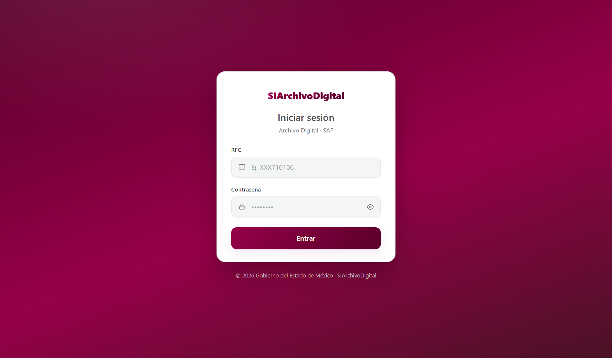
Para salir, usa el botón Cerrar sesión en la esquina superior derecha. Por seguridad, si pasas una hora sin actividad el sistema muestra el aviso “¿Sigues ahí?” con una cuenta regresiva de 60 segundos: presiona Seguir conectado para continuar o la sesión se cerrará sola.
Al entrar verás un resumen de tu trabajo pendiente y accesos rápidos a las tareas más comunes.
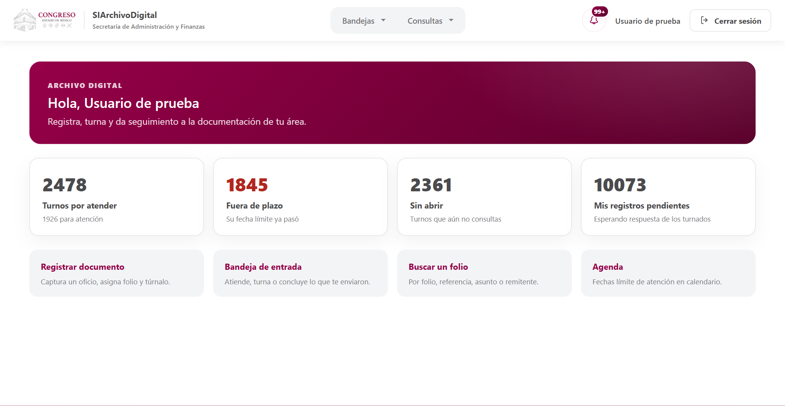
| Indicador | Qué cuenta |
|---|---|
| Turnos por atender | Documentos que te turnaron y que no has concluido (y cuántos de ellos son para atención). |
| Fuera de plazo | Turnos para atención cuya fecha límite ya pasó. |
| Sin abrir | Turnos cuyo documento todavía no has consultado. |
| Mis registros pendientes | Documentos que registró tu área y que siguen esperando respuesta de las personas a quienes se turnaron. |
Cada indicador es un enlace a la bandeja correspondiente. Debajo están los accesos a Registrar documento, Bandeja de entrada, Buscar un folio y Agenda.
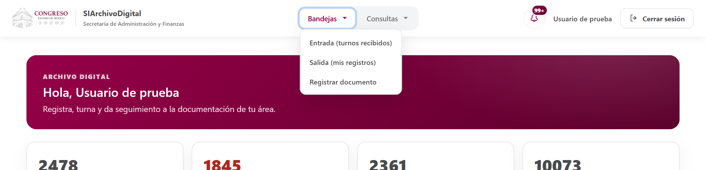
| Menú | Opciones |
|---|---|
| Bandejas | Entrada (turnos recibidos) · Salida (mis registros) · Registrar documento |
| Consultas | Búsqueda de folios · Agenda · Archivo de concentración · Reportes |
| Presidencia | Agenda legislativa · Eventos legislativos (solo rol Presidencia o Administrador) |
| Administración | Clasificación archivística · Grupos de destinatarios · Roles de usuario (solo Administrador) |
En pantallas pequeñas o en el celular, el menú se abre con el botón de tres líneas (☰).
La campana de la barra superior muestra cuántas notificaciones tienes sin leer (por ejemplo, cuando te turnan un documento). Al hacer clic se abre el panel: selecciona una notificación para ir directo al documento, o usa Marcar todas como leídas.
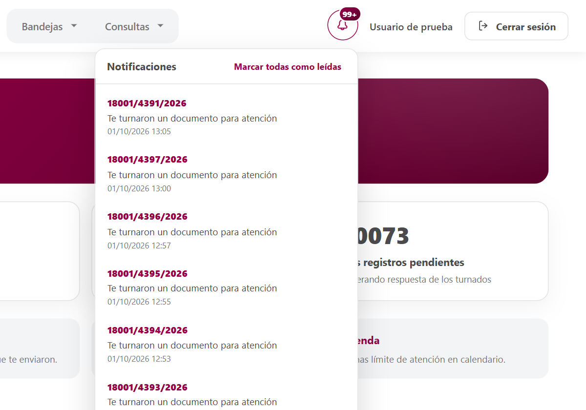
En Bandejas › Entrada están los documentos que te turnaron. La pantalla se llama Bandeja y tiene dos pestañas: Recibidos (esta) y Enviados (capítulo 6). El número junto a Recibidos indica cuántos documentos aún no abres.
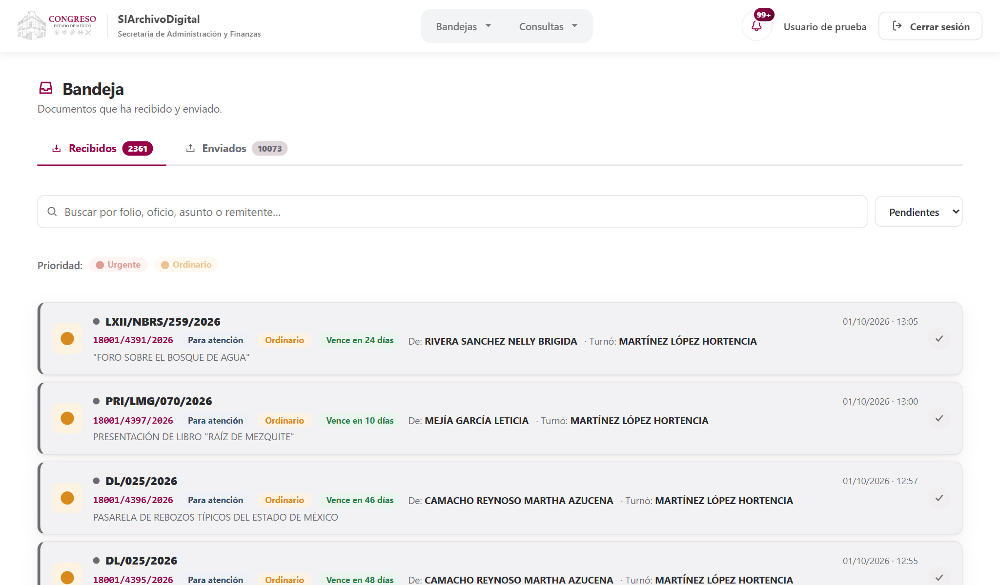
Cada documento aparece como una tarjeta con:
Los documentos que todavía no abres aparecen con fondo gris, borde izquierdo y un punto junto al título. Los documentos cancelados se ven atenuados.
La lista muestra 20 documentos por página. Al final verás “Mostrando 1–20 de N” y los botones Anterior, números de página y Siguiente.
Haz clic en una tarjeta para abrir la vista rápida sin salir de la bandeja. Muestra la serie, prioridad, remitente, quién lo registró, fechas, asunto, indicaciones y el estatus de tu turno.
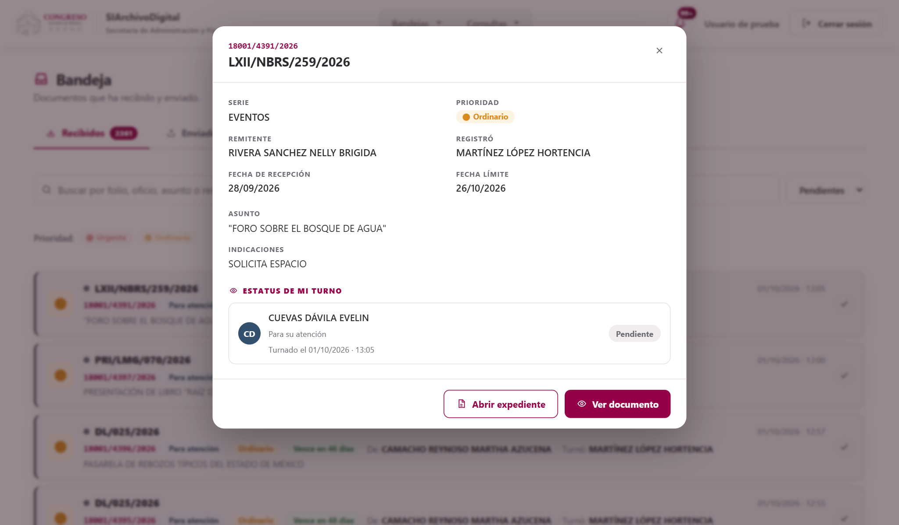
El expediente reúne toda la información de un registro: datos, turnos, comentarios y las acciones disponibles. Llegas a él desde la vista rápida, desde una notificación, la búsqueda o la agenda.
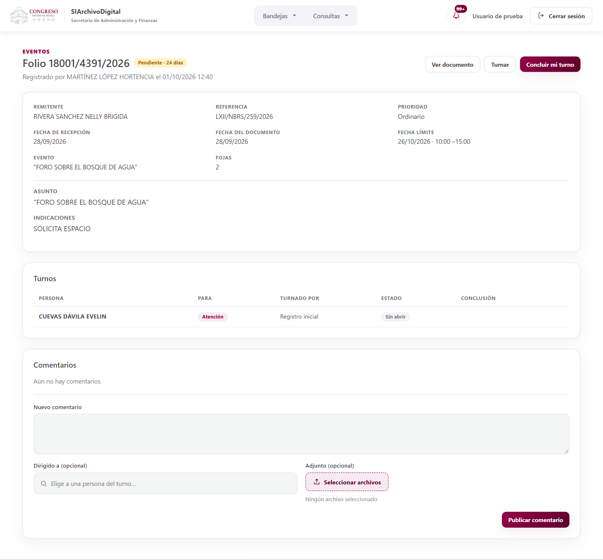
Solo aparecen los botones que te corresponden según tu participación en el documento:
| Botón | Quién lo ve y para qué sirve |
|---|---|
| Ver documento | Todos, si el registro tiene archivo. Abre el documento escaneado. |
| Turnar | Quien tiene un turno en el documento o quien lo registró. Envía el documento a más personas. |
| Concluir mi turno | Quien tiene un turno para atención pendiente. |
| Marcar como leído | Quien tiene un turno para conocimiento pendiente. |
| Editar · Cancelar registro | Solo el área que registró el documento, mientras esté activo (capítulo 7). |
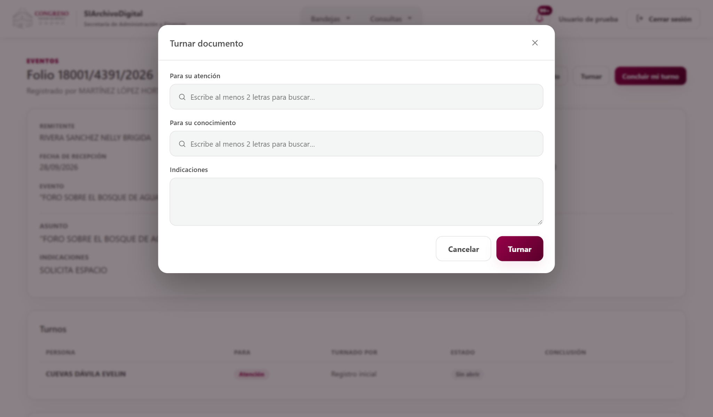
Si te equivocaste al turnar, en la tabla de Turnos aparece el enlace Quitar en los turnos que tú asignaste y que todavía pueden cancelarse.
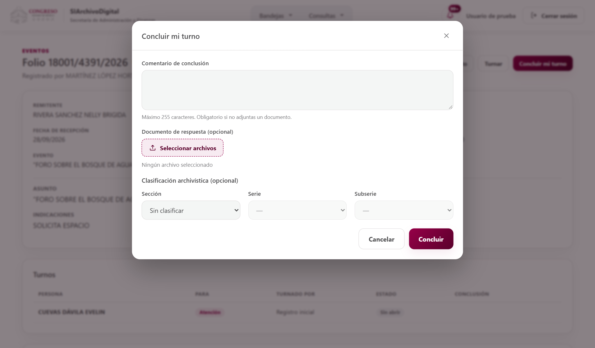
Cuando todas las personas con turno para atención concluyen, el documento pasa a estatus Concluido. Para turnos de conocimiento, el botón es Marcar como leído y solo confirma que te enteraste.
Al final del expediente puedes escribir un nuevo comentario, dirigirlo opcionalmente a una persona del turno y adjuntar un archivo. Presiona Publicar comentario. Los demás pueden responder dentro del mismo hilo.
En Bandejas › Salida, o con la pestaña Enviados, verás los documentos que registró tu área y el avance de las personas a quienes se turnaron. El número junto a Enviados es el total de registros pendientes de todos los años.
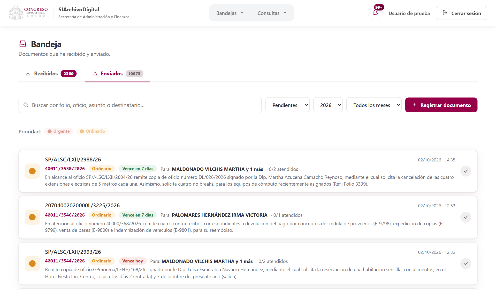
Cada tarjeta muestra el número de oficio, la fecha y hora de registro, el folio, la prioridad, el estatus o plazo, Para: a quién se turnó (por ejemplo, “Martha Maldonado y 1 más”) y cuántos turnos de atención ya se atendieron (“0/2 atendidos”). El indicador de la derecha se vuelve ✓✓ azul cuando el documento está concluido.
El botón + Registrar documento abre el formulario de captura (capítulo 7).
Al hacer clic en una tarjeta se abre la vista rápida con el estatus de todos los turnos: Pendiente, Visto, Atendido o Enterado (conocimiento), además del comentario de conclusión de cada persona.
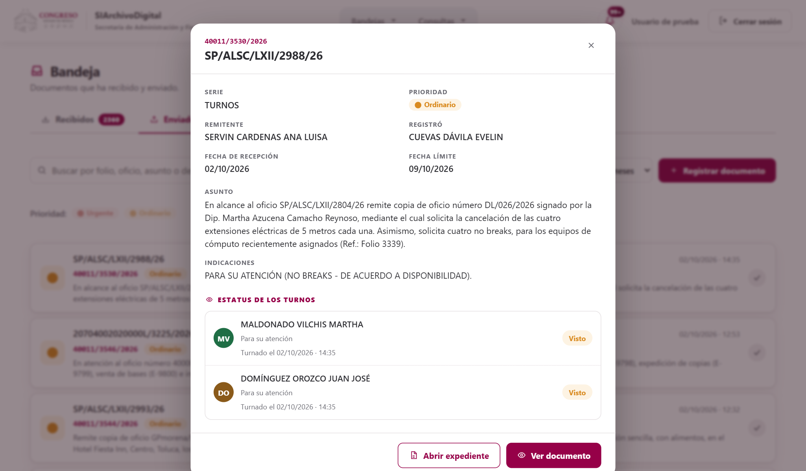
Entra a Bandejas › Registrar documento. En la parte superior se muestra el folio que tendrá el registro; se confirma al guardar (si otra persona de tu área guarda antes, el sistema asigna el siguiente consecutivo).
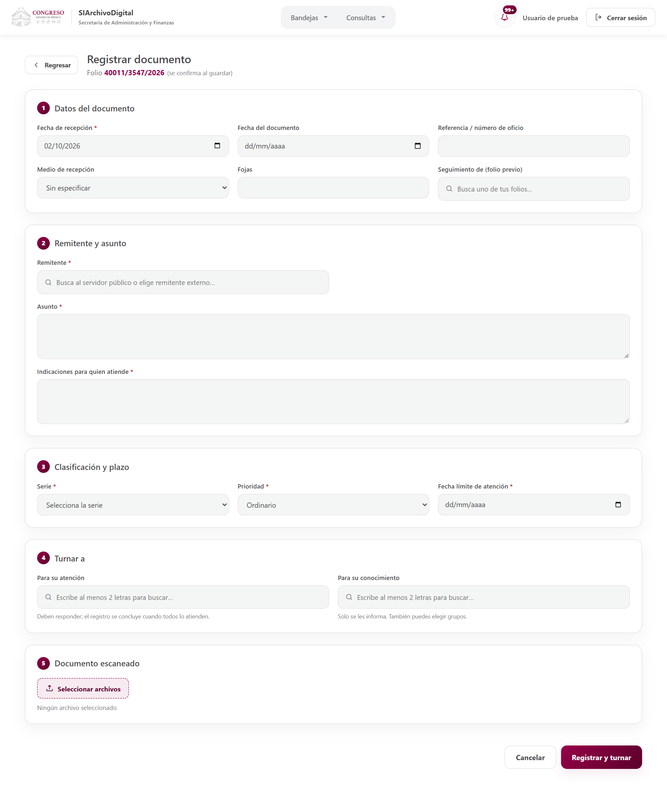
Presiona Seleccionar archivos y elige el archivo (PDF, imagen, Word o Excel).
Al terminar, presiona Registrar y turnar. El documento aparecerá en tu bandeja de salida y en la bandeja de entrada de las personas seleccionadas.
Desde el expediente, presiona Editar. Se abre el mismo formulario con los datos actuales. Si cargas un archivo nuevo, reemplaza al anterior. Solo el área que registró el documento puede editarlo, y solo mientras no esté cancelado.
Desde el expediente, presiona Cancelar registro y confirma. El documento queda con estatus Cancelado, se ve atenuado en todas las bandejas y ya no admite acciones. Esta acción no se puede deshacer.
En Consultas › Búsqueda de folios puedes localizar cualquier documento al que tengas acceso (los que registraste, los que te turnaron o los que turnaste).
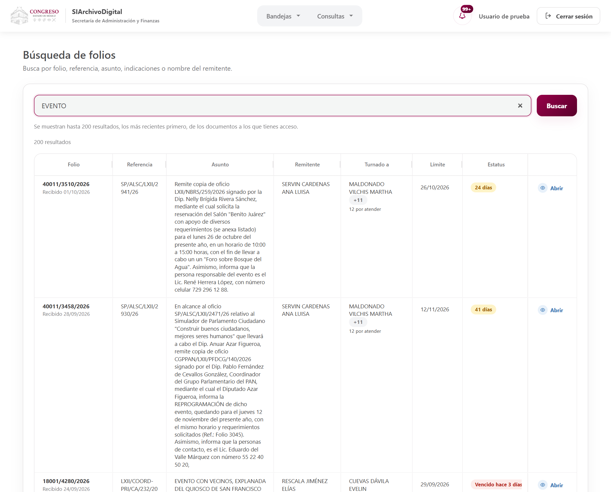
Se muestran hasta 200 resultados, los más recientes primero. Si buscas algo muy general, agrega más palabras o usa el folio completo.
En Consultas › Agenda se muestran, en un calendario mensual, las fechas límite de los documentos que registraste o que te turnaron.
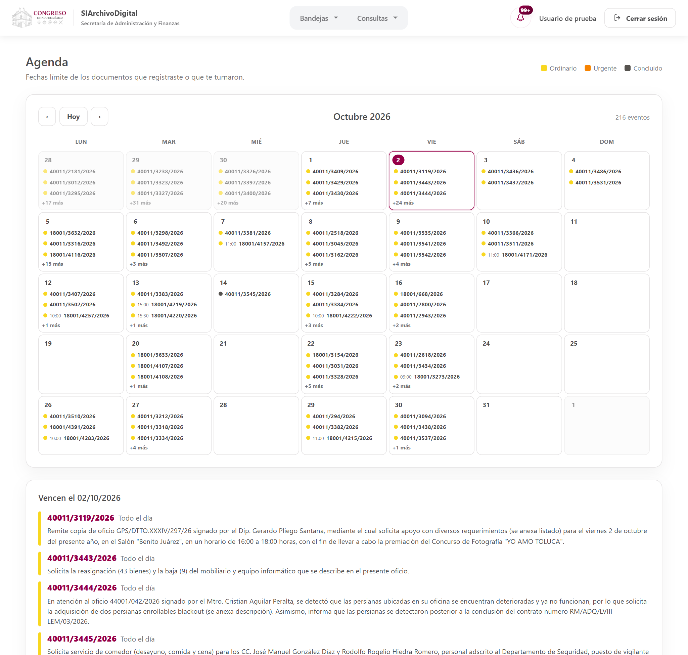
En Consultas › Archivo de concentración aparecen los documentos que registraste y que ya cumplieron su tiempo en el archivo de trámite, según el plazo de su serie (2 años si la serie no lo define). Estos documentos deben transferirse físicamente al archivo de concentración.
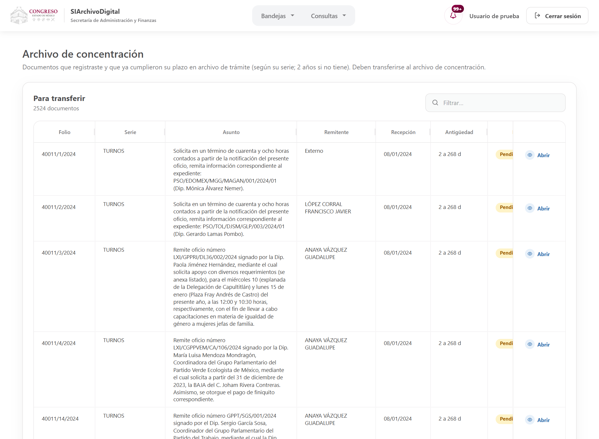
Usa el campo Filtrar… para localizar documentos en la tabla. Si no tienes documentos pendientes, verás el mensaje “No tienes documentos pendientes de transferir”.
En Consultas › Reportes puedes conocer el avance de los documentos registrados en un periodo (por fecha de recepción).
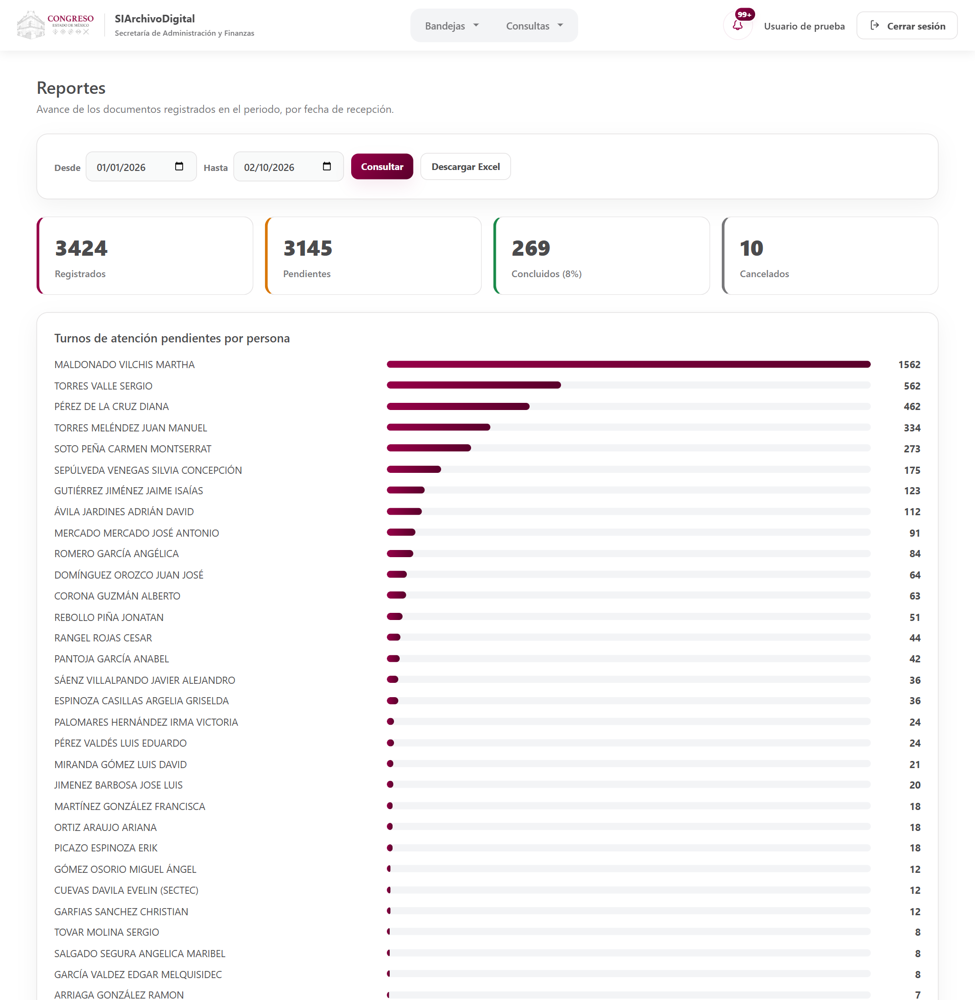
Los administradores ven además la casilla Todas las áreas para consultar el reporte general.
Este menú está disponible para el personal con rol Presidencia y para los administradores.
En Presidencia › Agenda legislativa se concentran en un calendario los documentos de la serie EVENTOS y los eventos legislativos (sesiones, comisiones, comparecencias). Cada sede tiene su color y cada evento muestra su hora.
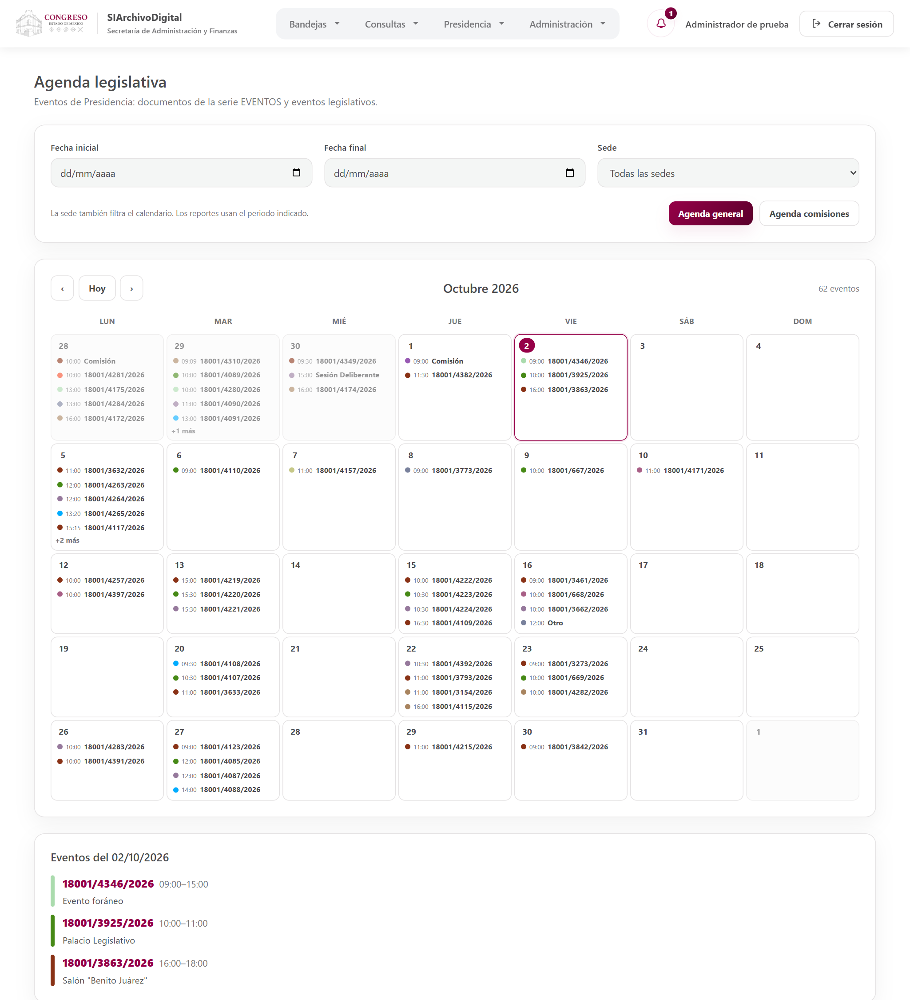
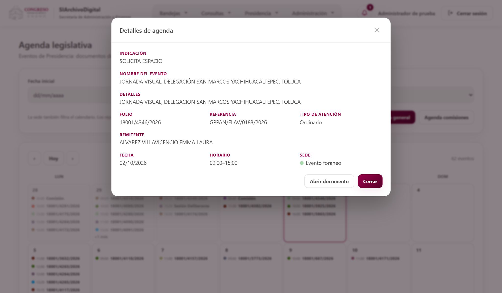
El detalle incluye indicación, nombre del evento, folio, referencia, remitente, fecha, horario, sede y, en los eventos legislativos, las comisiones participantes. Abrir documento lleva al expediente cuando el evento proviene de un registro.
En Presidencia › Eventos legislativos se capturan las sesiones, reuniones de comisión y comparecencias que deben aparecer en la agenda.
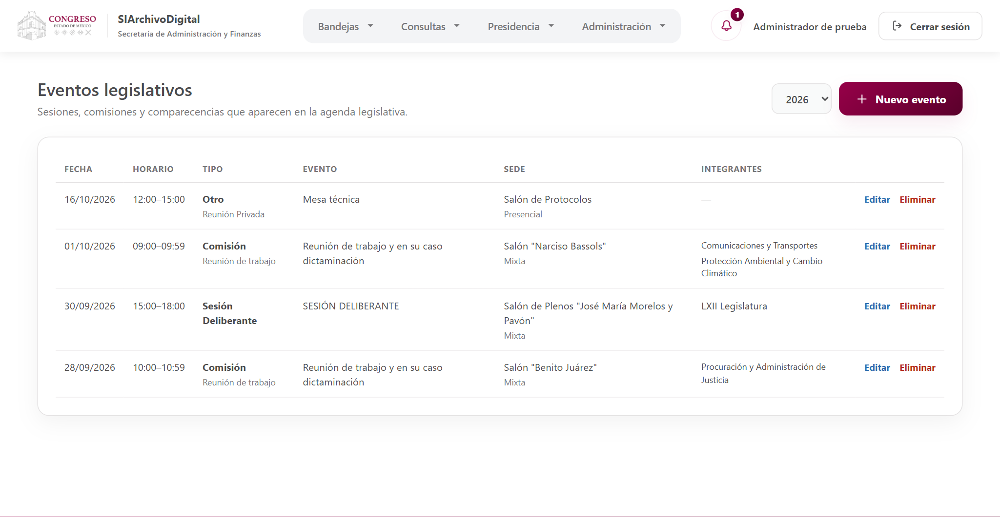
La tabla muestra fecha, horario, tipo, evento, sede e integrantes de cada evento del año elegido. Usa Editar o Eliminar en cada fila.
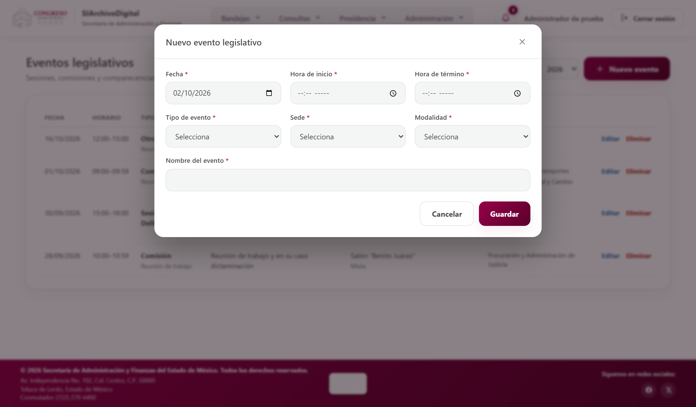
Este menú solo está disponible para el rol Administrador.
En Administración › Clasificación archivística se mantiene el cuadro general de clasificación de cada área, en tres niveles: secciones, series y subseries.
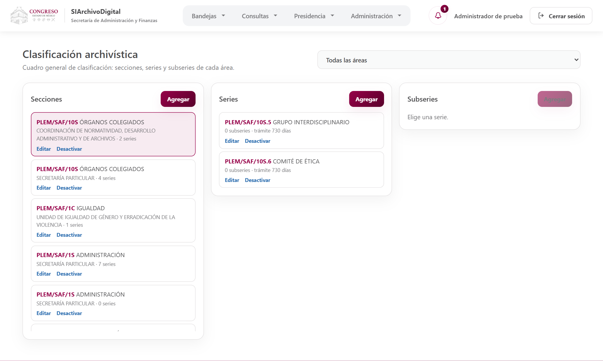
En Administración › Grupos de destinatarios se crean listas de personas para turnar a varias a la vez. Al turnar a un grupo, el documento llega a cada integrante.
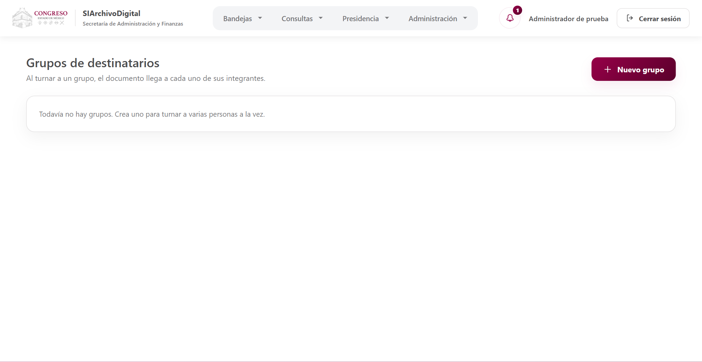
En Administración › Roles de usuario se define qué puede ver cada persona. Por omisión, todos son Usuario.
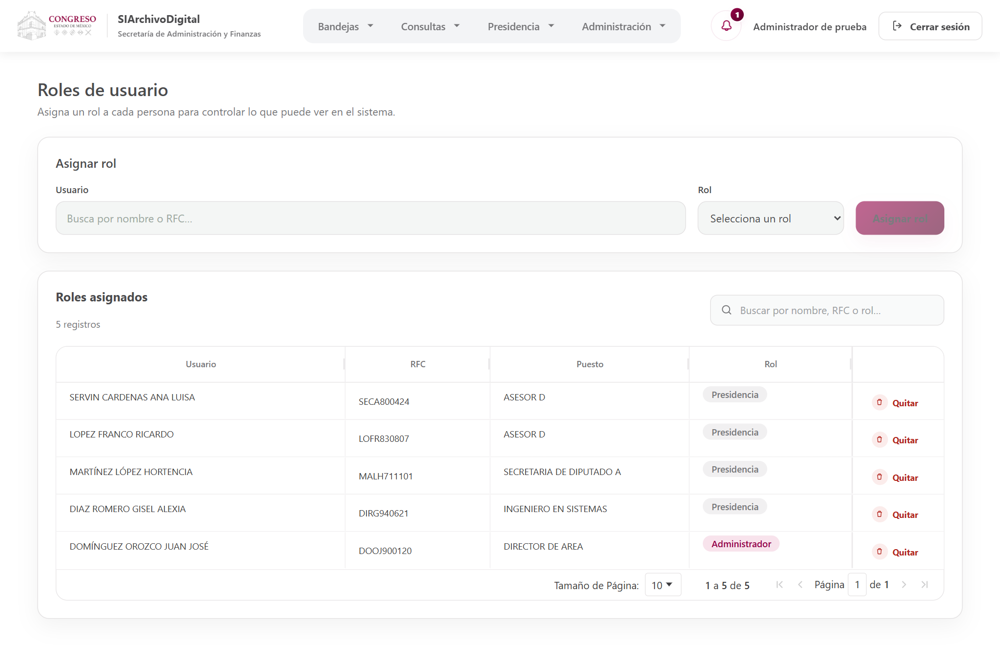
El turno se marca como visto cuando abres el archivo con Ver documento. Consultar solo la vista rápida no lo marca.
Un documento se concluye cuando todas las personas con turno para atención lo atienden. Revisa en el expediente o en la vista rápida quién falta.
Solo aparecen las personas a las que tu puesto puede turnar según el padrón y que tienen una cuenta activa. Si debería aparecer, repórtalo a Informática.
En la bandeja de entrada, cambia el filtro a Atendidos y elige el año y el mes. En la bandeja de salida, usa los filtros de estatus, año y mes.
Sí, con Editar desde el expediente, siempre que no esté cancelado. Si lo cancelaste, ya no puede modificarse; registra uno nuevo y, si aplica, lígalo con Seguimiento de.
Tras una hora sin actividad aparece un aviso de 60 segundos; si no respondes, la sesión se cierra por seguridad. Vuelve a iniciar sesión; lo que ya guardaste no se pierde.
Sí. Las bandejas, la vista rápida y los formularios se adaptan a pantallas pequeñas; el menú se abre con el botón ☰.
| Término | Definición |
|---|---|
| Archivo de trámite | Etapa en la que el documento está en uso por el área que lo generó o recibió. |
| Archivo de concentración | Etapa a la que se transfieren los documentos cuando concluye su plazo en trámite. |
| Expediente | Página que reúne datos, archivo, turnos y comentarios de un registro. |
| Fojas | Número de hojas del documento físico. |
| Folio | Identificador único del registro en el sistema. |
| Lector delegado | Persona autorizada para consultar, sin modificar, las bandejas de su titular. |
| Referencia | Número de oficio original del documento. |
| Remitente | Persona o institución que envía el documento. |
| Sección / Serie / Subserie | Niveles del cuadro general de clasificación archivística. |
| Sede | Salón o lugar donde se realiza un evento. |
| Turno | Asignación de un documento a una persona, para su atención o para su conocimiento. |
Para dudas o reportes sobre el sistema, comunícate con el área de Informática de la Secretaría de Administración y Finanzas · Conmutador (722) 279-6400.